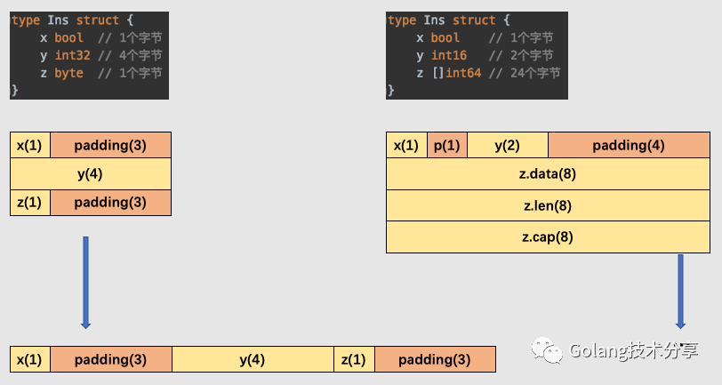
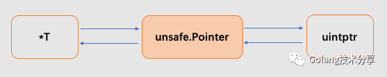
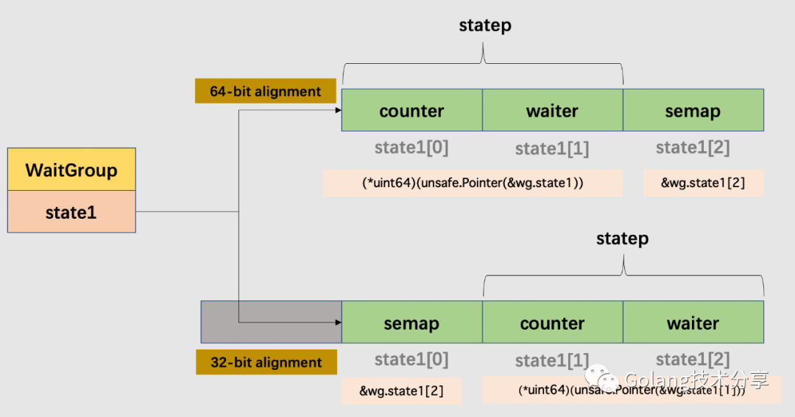
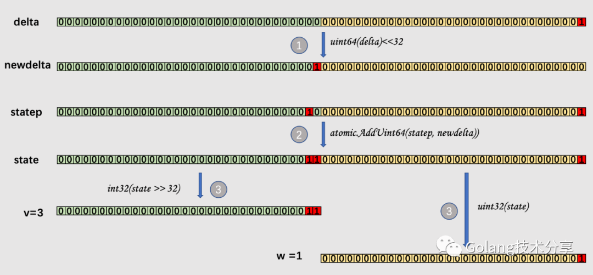

Go中看似简单的WaitGroup源码设计，竟然暗含这么多知识？
Go语言提供的协程goroutine可以让我们很容易地写出多线程程序，但是，如何让这些并发执行的goroutine得到有效地控制，这是我们需要探讨的问题。正如小菜刀在《Golang并发控制简述》中所述，Go标准库为我们提供的同步原语中，锁与原子操作注重控制goroutine之间的数据安全，WaitGroup、channel与Context控制的是它们的并发行为。关于锁、原子操作、channel 的实现原理小菜刀均有详细地解析过。因此本文，我们将重点放在WaitGroup上。
初识WaitGroup
WaitGroup是sync包下的内容，用于控制协程间的同步。WaitGroup使用场景同名字的含义一样，当我们需要等待一组协程都执行完成以后，才能做后续的处理时，就可以考虑使用。
1 | 1func main() { |
可以看到WaitGroup的使用非常简单，它提供了三个方法。虽然goroutine之间并不存在类似于父子关系，但是为了方便理解，本文会将调用Wait函数的goroutine称为主goroutine，调用Done函数的goroutine称呼为子goroutine。
1 | 1func (wg *WaitGroup) Add(delta int) // 增加WaitGroup中的子goroutine计数值 |
那么它是如何实现的呢？在源码src/sync/waitgroup.go中，我们可以看到它的核心源码只有100行不到，十分地精练，非常值得学习。
前置知识
代码少，不代表就实现简单，易于理解。相反，如果读者没有下述中的前置知识，想要真正理解WaitGroup的实现是会比较费力的。在解析源码之前，我们先过一遍这些知识（如果你都已经掌握，那就可以直接跳到后文的源码解析部分）。
信号量
在学习操作系统时，我们知道信号量是一种保护共享资源的机制，用于解决多线程同步问题。信号量s是具有非负整数值的全局变量，只能由两种特殊的操作来处理，这两种操作称为P和V。
P(s)：如果s是非零的，那么P将s减1，并且立即返回。如果s为零，那么就挂起这个线程，直到s变为非零，等到另一个执行V(s)操作的线程唤醒该线程。在唤醒之后，P操作将s减1，并将控制返回给调用者。V(s)：V操作将s加1。如果有任何线程阻塞在P操作等待s变为非零，那么V操作会唤醒这些线程中的一个，然后该线程将s减1，完成它的P操作。
在Go的底层信号量函数中
runtime_Semacquire(s *uint32)函数会阻塞goroutine直到信号量s的值大于0，然后原子性地减这个值，即P操作。runtime_Semrelease(s *uint32, lifo bool, skipframes int)函数原子性增加信号量的值，然后通知被runtime_Semacquire阻塞的goroutine，即V操作。
这两个信号量函数不止在WaitGroup中会用上，在《Go精妙的互斥锁设计》一文中，我们发现Go在设计互斥锁的时候也少不了信号量的参与。
内存对齐
对于以下的结构体，你能回答出它占用的内存是多少吗
1 | 1type Ins struct { |
按照结构体中字段的大小而言，ins对象占用内存应该是 1+4+1=6 个字节，但是实际上确实12个字节，这就是内存对齐所致。从《CPU缓存体系对Go程序的影响》一文中，我们知道CPU的内存读取并不是一个字节一个字节地读取的，而是一块一块的。因此，在类型的值在内存中对齐的情况下，计算机的加载或者写入会很高效。
在聚合类型（结构体或数组）的内存所占长度或许会比它元素所占内存之和更大。编译器会添加未使用的内存地址用于填充内存空隙，以确保连续的成员或元素相当于结构体或数组的起始地址是对齐的。

因此，在我们设计结构体时，当结构体成员的类型不同时，将相同类型的成员定义在相邻位置可以更节省内存空间。
原子操作CAS
CAS是原子操作的一种，可用于在多线程编程中实现不被打断的数据交换操作，从而避免多线程同时改写某一数据时由于执行顺序不确定性以及中断的不可预知性产生的数据不一致问题。该操作通过将内存中的值与指定数据进行比较，当数值一样时将内存中的数据替换为新的值。关于Go中原子操作的底层实现，小菜刀在《同步原语的基石》一文中有详细介绍。
移位运算 >> 与 <<
在之前关于锁的文章《Go精妙的互斥锁设计》与《Go更细粒度的读写锁设计中》，我们能看到大量的位运算操作。灵活的位运算，能让一个普通的数字变化出丰富的含义，这里仅介绍下文中会用到的移位运算。
对于左移位运算 <<，按二进制形式将所有的数字向左移动对应的位数，高位舍弃，低位的空位补零。在数字没有溢出的前提下，左移一位相当于乘以2的1次方，左移n位就相当于乘以2的n次方。
对于右移位运算 >>，按二进制形式把所有的数字向右移动对应位数，低位移出，高位的空位补符号位。右移一位相当于除2，右移n位相当于除以2的n次方。这里是取商，余数就不要了。
移位运算也可以有很巧妙的操作，后文中我们会看到移位运算的高级运用。
unsafa.Pointer指针与uintptr
Go中的指针可以分为三类：1.普通类型指针T，例如int；2. unsafe.Pointer指针；3. uintptr。
- *T：普通的指针类型，用于传递对象地址，不能进行指针计算。
- unsafe.Pointer指针：通用型指针，任何一个普通类型的指针T都可以转换为unsafe.Pointer指针，而且unsafe.Pointer类型的指针还可以转换回普通指针，并且它可以不用和原来的指针类型T相同。但是它不能进行指针计算，不能读取内存中的值（必须通过转换为某一具体类型的普通指针才行）。
- uintptr：准确来讲，uintptr并不是指针，它是一个大小并不明确的无符号整型。unsafe.Pointer类型可以与uinptr相互转换，由于uinptr类型保存了指针所指向地址的数值，因此可以通过该数值进行指针运算。GC时，不会将uintptr当做指针，uintptr类型目标会被回收。

unsafe.Pointer 是桥梁，可以让任意类型的普通指针实现相互转换，也可以将任意类型的指针转换为 uintptr 进行指针运算。但是，unsafe.Pointer和任意类型指针的转换可以让我们将任意值写入内存中，这会破坏Go原有的类型系统，同时由于不是所有的数值都是合法的内存地址，从uintptr到unsafe.Pointer的转换同样会破坏类型系统。因此，既然Go将该包定义为unsafe，那就不应该随意使用。
源码解析
本文基于Go源码1.15.7版本
结构体
sync.WaitGroup的结构体定义如下，它包括了一个 noCopy 的辅助字段，和一个具有复合意义的state1字段。
1 | 1type WaitGroup struct { |
其中，noCopy字段是空结构体，它并不会占用内存，编译器也不会对其进行字节填充。它主要是为了通过go vet工具来做静态编译检查，防止开发者在使用WaitGroup过程中对其进行了复制，从而导致的安全隐患。关于这部分内容，可以阅读《no copy机制》详细了解。
state1字段是一个长度为3的uint32数组。它用于表示三部分内容：1. 通过Add()设置的子goroutine的计数值counter；2. 通过Wait()陷入阻塞的waiter数；3. 信号量semap。
由于后续是对 uint64 类型的statep进行操作，而64位整数的原子操作需要64位对齐，32位的编译器并不能保证这一点。因此，在64位与32位的环境下，state1字段的组成含义是不相同的。

需要注意的是，当我们初始化一个WaitGroup对象时，其counter值、waiter值、semap值均为0。
Add函数
Add()函数的入参是一个整型，它可正可负，是对counter数值的更改。如果counter数值变为0，那么所有阻塞在Wait()函数的waiter将会被唤醒；如果counter数值为负值，将引起panic。
我们将竞态检测部分的代码去掉，Add()函数的实现源码如下
1 | 1func (wg *WaitGroup) Add(delta int) { |
代码非常精简，我们接下来对关键部分进行剖析。
1 | 1 state := atomic.AddUint64(statep, uint64(delta)<<32) // 新增counter数值delta |
此时的statep是一个uint64数值，如果此时statep中包含的counter数为2，waiter为1，输入delta为1，那么这三行代码的逻辑过程如下图所示。

在得到当前counter数v与waiter数w后，会对它们的值进行判断，分几种情况。
1 | 1 // 情况1：这是很低级的错误，counter值不能为负 |
关于 misuse 和 reused 引发 panic 的情况，如果没有示例错误代码，其实是比较难解释的。值得高兴的是，在Go源码中给出了错误使用示范，这些例子位于src/sync/waitgroup_test.go文件下，想深入了解的读者可以去看以下三个测试函数中的示例。
1 | 1func TestWaitGroupMisuse(t *testing.T) |
Done函数
Done()函数比较简单，就是调用Add(-1)。在实际使用时，当子goroutine任务完成之后，就应该调用Done()函数。
1 | 1func (wg *WaitGroup) Done() { |
Wait函数
如果WaitGroup中的counter值大于0，那么执行Wait()函数的主goroutine会将waiter值加1，并阻塞等待该值为0，才能继续执行后续代码。
我们将竞态检测部分的代码去掉，Wait()函数的实现源码如下
1 | 1func (wg *WaitGroup) Wait() { |
总结
要看懂WaitGroup的源码实现，我们需要有一些前置知识，例如信号量、内存对齐、原子操作、移位运算和指针转换等。
但其实WaitGroup的实现思路还是蛮简单的，通过结构体字段state1维护了两个计数器和一个信号量，计数器分别是通过Add()添加的子goroutine的计数值counter，通过Wait()陷入阻塞的waiter数，信号量用于阻塞与唤醒Waiter。当执行Add(positive n)时，counter +=n，表明新增n个子goroutine执行任务。每个子goroutine完成任务之后，需要调用Done()函数将counter值减1，当最后一个子goroutine完成时，counter值会是0，此时就需要唤醒阻塞在Wait()调用中的Waiter。
但是，在使用WaitGroup时，有几点需要注意
通过
Add()函数添加的counter数一定要与后续通过Done()减去的数值一致。如果前者大，那么阻塞在Wait()调用处的goroutine将永远得不到唤醒；如果后者大，将会引发panic。Add()的增量函数应该最先得到执行。不要对WaitGroup对象进行复制使用。
如果要复用WaitGroup，则必须在所有先前的
Wait()调用返回之后再进行新的Add()调用。